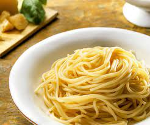

Pasta

What is it?
Cooking pasta is a basic but appears often more complicated to novice than it should. Here is how to do it properly:
Ingredients
- 200g of dry pasta
- 500ml of water
- 1 pinch of salt
- 1 spoon of curry
- butter
- 1 beef flavored cube
Steps
- Put the salt and the beef flavored cube into the water and boil it on the stove.
- When the water boils, put the pasta into it and let it cook for the time indicated on the plastic. You know it is cooked
when the pasta is still slightly hard when you taste it. If the water threatens to spill over, decrease the heat's intensity.
- Pour the water into the sink.
- Add the butter and the curry.
- Mix evrething with a spoon.
- Serve. By the time you eat the pasta, it will have cooked just right for you to enjoy it.